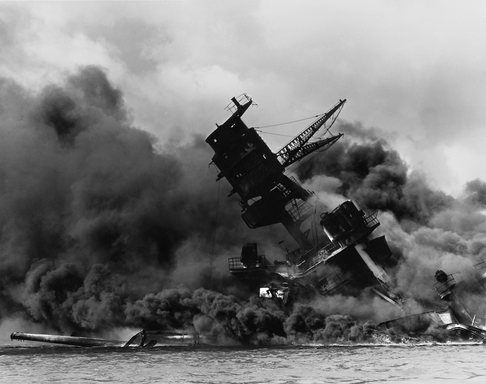

Directions: Work through the five stations. At each station, record what the document shows. At the end, sort the war's opening facts into what December 1941 decided and what it left open, then judge which open question carried the most risk. Station 1 is a verbatim address with cuts marked by ellipses. Stations 3, 4, and 5 are labeled summaries of the record, prepared for this lesson.
Source: Franklin D. Roosevelt, Pearl Harbor Address to Congress, December 8, 1941. Franklin D. Roosevelt Presidential Library, delivered-address transcription, as recorded in the audited TPSP record. Cuts are marked with ellipses.
Yesterday, December 7, 1941 ... the United States of America was suddenly and deliberately attacked by naval and air forces of the Empire of Japan.
The United States was at peace with that Nation and, at the solicitation of Japan, was still in conversation with its Government and its Emperor looking toward the maintenance of peace in the Pacific.
Indeed, one hour after Japanese air squadrons had commenced bombing in the American Island of Oahu, the Japanese ambassador to the United States and his colleague delivered to our Secretary of State a formal reply to a recent American message. And while this reply stated that it seemed useless to continue the existing diplomatic negotiations, it contained no threat or hint of war or of armed attack.
It will be recorded that the distance of Hawaii from Japan makes it obvious that the attack was deliberately planned many days or even weeks ago. During the intervening time, the Japanese Government has deliberately sought to deceive the United States by false statements and expressions of hope for continued peace.
The attack yesterday on the Hawaiian Islands has caused severe damage to American naval and military forces. I regret to tell you that very many American lives have been lost. In addition, American ships have been reported torpedoed on the high seas between San Francisco and Honolulu.
Yesterday, the Japanese Government also launched an attack against Malaya. Last night, Japanese forces attacked Hong Kong. Last night, Japanese forces attacked Guam. Last night, Japanese forces attacked the Philippine Islands. ...
No matter how long it may take us to overcome this premeditated invasion, the American people in their righteous might will win through to absolute victory. ...
I ask that the Congress declare that since the unprovoked and dastardly attack by Japan on Sunday, December 7, 1941, a state of war has existed between the United States and the Japanese Empire.
What does Roosevelt ask Congress to declare, and how does he word the request so that the war is dated from the attack itself?
Name two pieces of evidence Roosevelt gives that the attack was planned and deceptive, and say what work each piece does in his argument.
Source: The record of the attack as kept in the standard United States Navy accounting of December 7, 1941, presented here as a figures table.

| Item | Figure |
|---|---|
| Americans killed | 2,403 |
| Americans wounded | 1,178 |
| Battleships damaged or sunk | 8 damaged, 4 of them sunk |
| American aircraft destroyed | 188 |
| American aircraft damaged | 159 |
| Pacific Fleet aircraft carriers in the harbor | 0. The carriers were at sea and survived |
Which single line of the table carried the largest consequence for the war that followed, and why? Answer from the figures, not from the photograph.
The battleship fleet was wrecked in one morning. Why did that loss not end American naval power in the Pacific? Use the last line of the table.
Source: Summary of the record, prepared for this lesson. Germany's declaration of December 11, 1941, and the American answer are summarized here, not transcribed.
On December 11, 1941, the German government delivered its declaration of war on the United States, and Adolf Hitler announced it to the Reichstag in Berlin. Germany charged that the United States had already been waging undeclared war in the Atlantic, pointing to American naval escorts, the orders to shoot on sight given to American warships that autumn, and American aid to Britain under Lend-Lease. Italy declared war the same day. The Tripartite Pact that bound Germany, Italy, and Japan did not require Germany to join a war Japan had begun by attacking first, so the declaration was Germany's own choice. Congress answered within hours, declaring war on Germany and on Italy without a dissenting vote in either chamber.
What charges did Germany give as its reasons, and which American policies of 1941 do those charges point back to?
Why does it count that the declaration was Germany's own choice rather than a treaty duty? What question did the choice settle for the United States?
Source: Teaching summary of the Arcadia Conference agreements, prepared for this lesson. The agreements are summarized here, not transcribed.
Roosevelt and Churchill met in Washington at the Arcadia Conference, from December 22, 1941 to January 14, 1942. Their staffs reaffirmed the plan they had drafted before Pearl Harbor: Germany was the stronger enemy and the main effort would go to defeating Germany first, while Japan was held in the Pacific. On January 1, 1942, 26 nations signed the Declaration by United Nations, pledging their full resources against the Axis and no separate peace. The Soviet Union, whose armies were carrying the largest land fighting against Germany, pressed from 1942 onward for a second front, an Allied invasion of German-held France that would draw German divisions west. The western Allies judged in 1942 that they lacked the landing craft, trained troops, and air strength for France, and landed in North Africa instead. The invasion of France came in June 1944.
State the Germany first agreement in your own words, and give the reason the staffs gave for it.
The second front was promised in principle and postponed in practice. What did the western Allies say they lacked in 1942, and what did they do instead?
Source: Summary of the record, prepared for this lesson, with figures from the standard accounting of the Philippine campaign and the raid of April 18, 1942.
Japanese forces landed in the Philippines within days of Pearl Harbor and drove American and Filipino forces onto the Bataan peninsula. The defenders held for about four months on shrinking rations, short of medicine and ammunition, with no relief force able to reach them. On April 9, 1942, the Bataan force surrendered, about 75,000 American and Filipino troops, the largest surrender of American-led forces in the country's history. Their captors marched them about 65 miles to prison camps, and thousands died on the march and in the camps that followed. The island fortress of Corregidor held until May 6. Nine days after Bataan fell, on April 18, sixteen B-25 bombers under Lieutenant Colonel James Doolittle took off from the carrier Hornet and bombed Tokyo and other Japanese cities. Material damage was small. The raiders flew on to China, where most crews survived with Chinese help.
What do the Bataan figures show about the condition of American forces in the spring of 1942? Name the shortages the summary lists.
The Doolittle Raid did little material damage. Explain what it accomplished instead, and for which audiences.
Complete the sorting table. Use one line for each fact.
| What December 1941 settled | What December 1941 left open |
|---|---|
Which open question carried the most risk, and why? Write a short paragraph. Name the open question, state what depended on its answer, and use evidence from at least two stations.
What does Roosevelt ask, and how is the request worded? He asks Congress to declare that a state of war has existed between the United States and the Japanese Empire since the unprovoked attack of Sunday, December 7, 1941. The wording backdates the war to the attack itself, so Congress is presented as recognizing a war Japan had already begun rather than choosing to start one.
Name two pieces of evidence of planning and deception. Any two, with their work stated. The Japanese reply delivered one hour after bombing began contained no threat or hint of war, which shows the talks were a screen. The distance of Hawaii from Japan makes it obvious the attack was planned many days or weeks ahead, which shows premeditation rather than a sudden decision. Roosevelt adds that Japan sought to deceive the United States by false statements and expressions of hope for continued peace during the intervening time. Each piece builds the same point, that the attack was deliberate and unprovoked, which is the legal and moral ground of the request.
Which line carried the largest consequence? The strongest answer is the last line. Zero carriers were in the harbor, and the carriers at sea survived. Battleships could be raised, repaired, or replaced, and most of the damaged ships returned to service. A lost carrier force in December 1941 would have left the Pacific without its striking arm for the campaigns of 1942. Accept the killed figure as an answer if the student argues consequence for the country's entry and unity, but press for the carrier line as the strategic consequence.
Why did the battleship loss not end American naval power in the Pacific? Because the fleet's aircraft carriers, the ships the Pacific war would be fought from, were at sea and survived untouched, along with the shore installations and fuel reserves at Pearl Harbor. The attack wrecked the battle line of the past war and left the striking force of the coming one intact.
What charges did Germany give? Germany charged that the United States had already been waging undeclared war in the Atlantic. The charges point back to the policies of 1941: Lend-Lease aid to Britain, American naval escorts of convoys, and the shoot on sight orders given to American warships in the Atlantic that autumn after the destroyer incidents.
Why does it count that the declaration was a choice? The Tripartite Pact bound Germany to aid Japan if Japan were attacked. Japan was the attacker, so no treaty duty applied, and Germany could have stayed out of a Pacific war. By declaring war, Germany settled the question Congress had not answered on December 8: the United States would fight a two-ocean war against all three Axis powers, and its main strategy would have to be built for two oceans at once.
State the agreement and its reason. The Allied staffs agreed to concentrate the main effort on defeating Germany before Japan, holding Japan in the Pacific with the forces available there. The reason was that Germany was the stronger enemy, the one whose victory could knock Britain or the Soviet Union out of the war, while Japan could not knock the United States out.
What did the western Allies say they lacked in 1942, and what did they do instead? They said they lacked landing craft, trained troops, and air strength for an invasion of France. Instead they landed in North Africa in November 1942, fighting Germany on a front they could reach while the army and the landing fleet were built. The second front in France came in June 1944, two years after the Soviet Union began demanding it, a delay the alliance argued about for the whole of that period.
What do the Bataan figures show? About 75,000 American and Filipino troops surrendered on April 9, 1942 after about four months of defense, the largest surrender of American-led forces in the country's history. The summary lists shortages of rations, medicine, and ammunition, and the absence of any relief force able to reach them. The figures show a force that fought until its supplies, not its will, ran out, and a country not yet able to project power across the Pacific it had entered.
What did the Doolittle Raid accomplish? Material damage was small, so the accomplishment was in effect. For Americans, sixteen bombers over Tokyo five months after Pearl Harbor answered the defeats of the spring and showed the home front that the war could be carried to Japan. For Japan, the raid was a shock that reached the capital itself and pressed its leaders to extend their defenses. Most crews survived by coming down in China with Chinese help.
Sorting table, expected entries. Settled: the neutrality debate ended and the country entered the war united; the United States was at war with Japan by declaration of December 8; after December 11 it was at war with Germany and Italy as well, a two-ocean war; the Grand Alliance was formed and Germany first adopted as the strategy. Left open: when and where a second front in France could be opened; whether the Grand Alliance would hold under the strain of that delay; whether American industry could build the arsenal the strategy required; how the Pacific war could be carried back across an ocean Japan had won in the spring of 1942. Closing paragraphs earn full credit for any of the open questions when the risk is argued from evidence. The production answer rests on Station 5 and the reading targets: every strategy depended on ships, planes, and trained forces that did not yet exist. The second front answer rests on Stations 3 and 4: the alliance's strongest land power was bearing the largest fighting while the invasion it demanded waited two years. The Pacific answer rests on Stations 2 and 5: the carriers survived, but the spring of 1942 showed how far Japan stood from defeat.